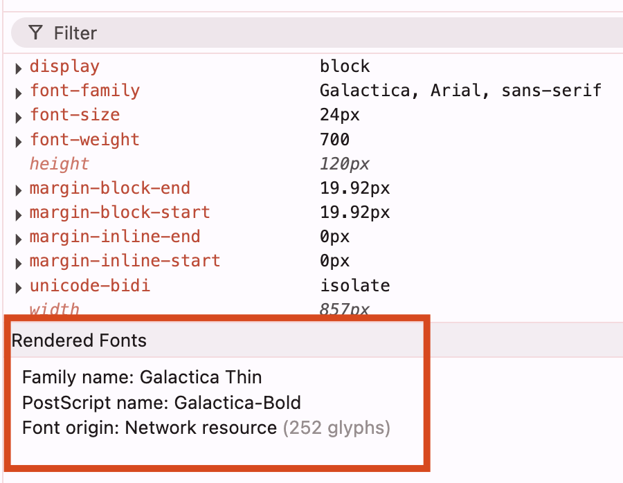

üìö Font und Schriftgr√∂sse anpassen
Diese wenigen Anpassungen haben schon einen starken Effekt auf das Optische. Basierend auf der Vorlage müssen wir uns auch noch Schrift und Schriftgrösse anschauen.
Font-Family analysieren
Wenn du z.B. das Titel-Element H2 untersuchst, findest du folgende Definition:
font-family: Galactica, Arial, sans-serif;
Body-Font definieren
Wir ergänzen die Schrift auf unsere ganze Page im CSS mittels dem Body-Selektor:
body {
margin: 20px;
font-family: Galactica, Arial, sans-serif;
}
Computed Styles überprüfen
Wenn du deine Seite nochmals untersuchst, wirst du eine Änderung feststellen. Aber irgendwie stimmt die Schrift noch nicht. Du kannst über "Computed" genau sehen, welche Schrift dein Browser ausgewählt hat.

Fallback-Mechanismus:
- Galactica versuchen → nicht gefunden
- Arial versuchen → ✅ gefunden und verwendet
- sans-serif als letzte Option
⚠️ Problem: Es rendert die Schrift "Arial", da Galactica nicht verfügbar ist.
Custom Font laden
Wir wollen aber die selbe Schrift wie in der Vorlage. Dazu müssen wir die Schrift zuerst laden.
Font-Loading Grundlagen
Referenz: W3Schools CSS3 Fonts
Font-URL finden
Die URL auf den Font ist auf der Galaxus-Seite zu finden:
Original-Pfad: /static/fonts/Galactica/galactica-2024-12-19.woff2
Vollständige URL: https://static.digitecgalaxus.ch/static/fonts/Galactica/galactica-2024-12-19.woff2
@font-face implementieren
@font-face {
font-family: 'Galactica';
src: url("https://static.digitecgalaxus.ch/static/fonts/Galactica/galactica-2024-12-19.woff2") format('woff2');
}

✅ Lade die Page neu und du wirst sehen, dass nun tatsächlich die Galactica-Schrift verwendet wird!
Schriftgrössen und Gewichte definieren
Damit auch die Grössen und font-weight aller Texte stimmen, gehe durch die Elemente aus der Vorlage durch und definiere es entsprechend in deinem CSS.
H1-Element Beispiel
Aus der Vorlage extrahierte Werte:
- font-weight: 650
- font-stretch: normal
- line-height: 36px
- font-size: 30px
h1 {
font-weight: 650;
font-stretch: normal;
line-height: 36px;
font-size: 30px;
}
Systematisches Vorgehen
- H1-H4 Elemente durchgehen
- P-Tags analysieren
- Werte aus Vorlage übernehmen
⚠️ Beachte: Falls du den Lead als H2 und weitere als H3 definiert hast, musst du das beim Kopieren entsprechend berücksichtigen!
Globale Text-Optimierungen
Vermutlich gibt es jetzt immer noch klare optische Unterschiede. Ein paar zusätzliche Definitionen kannst du mit einem * für alle Elemente hinzufügen:
Universal-Selector
* {
text-wrap-mode: wrap;
text-wrap-style: pretty;
overflow-wrap: break-word;
color-scheme: light;
-webkit-font-smoothing: antialiased;
}
P-Tag Letter-Spacing
p {
font-weight: 400;
font-stretch: normal;
line-height: 28px;
font-size: 18px;
letter-spacing: 0.005em;
}
Browser-spezifische Optimierungen
-webkit-font-smoothing
Das -webkit-font-smoothing ist etwas speziell und wird hier nicht unbedingt empfohlen, weil es nicht alle Browser unterstützen.
Aber: Es macht im Chrome einen wesentlichen optischen Unterschied!
A/B Test
Teste es mit und ohne:
- Ohne: Text wirkt beinahe "zu fett" oder "blurry"
- Mit: Schärfere, glattere Darstellung
Weitere Verbesserungen
Die weiteren Definitionen machen die Umbrüche etc. noch etwas besser:
- text-wrap-mode: Intelligentere Textumbrüche
- text-wrap-style: Schönere Zeilenumbrüche
- overflow-wrap: Besseres Verhalten bei langen Wörtern
Typography-Grundlage ist gelegt! üéâ